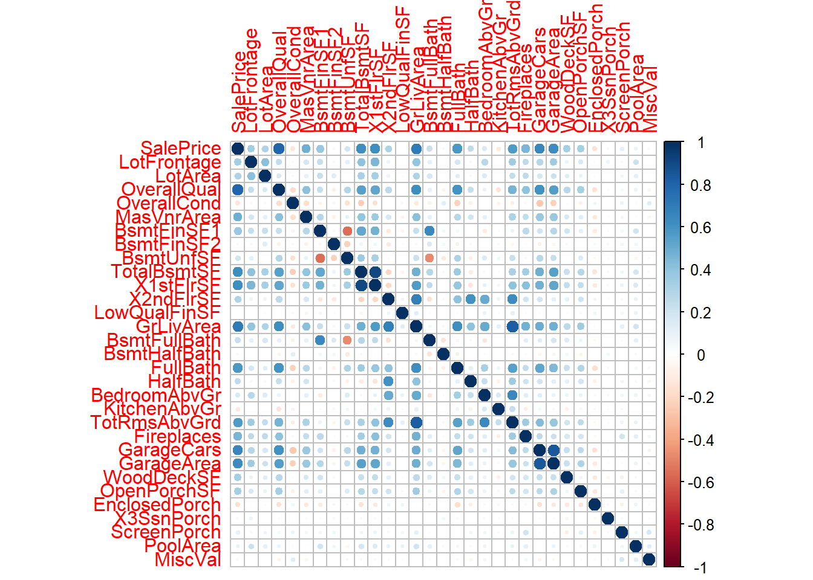

set.seed(123)
datos <- read.csv("train.csv")MD_HDT6
1. Dvisión de variables numéricas y obtención de data de prueba y entrenamiento
1.1 División de variables
1.2 Data de entrenamiento y de prueba
porcentaje <- 0.7
set.seed(123)
corte <- sample(nrow(datos), nrow(datos) * porcentaje)
train <- datos[corte, ]
test <- datos[-corte, ]1.3 Creación de árbol de clasificación de la nueva varibale
p33 <- quantile(datos$SalePrice, 0.33)
p66 <- quantile(datos$SalePrice, 0.66)
datosT <- datos
datosT <- datosT %>%
mutate(clasificacion = ifelse(datosT$SalePrice < p33, "Economicas",
ifelse(datosT$SalePrice < p66, "Intermedias",
"Caras"
)
))
datosT$clasificacion <- factor(datosT$clasificacion)Creación de variables dicotómicas
datosT$clasificacion [1] Caras Intermedias Caras Intermedias Caras Intermedias
[7] Caras Economicas Economicas Economicas Caras Caras
[13] Economicas Economicas Intermedias Intermedias Caras Intermedias
[19] Caras Economicas Caras Economicas Caras Caras
[25] Economicas Economicas Intermedias Intermedias Caras Caras
[31] Intermedias Intermedias Economicas Economicas Intermedias Intermedias
[37] Intermedias Caras Caras Caras Economicas Economicas
[43] Economicas Economicas Caras Economicas Intermedias Intermedias
[49] Caras Caras Economicas Intermedias Economicas Caras
[55] Intermedias Caras Caras Economicas Caras Caras
[61] Economicas Intermedias Intermedias Economicas Economicas Economicas
[67] Intermedias Economicas Caras Intermedias Caras Economicas
[73] Caras Intermedias Intermedias Economicas Economicas Economicas
[79] Economicas Intermedias Economicas Caras Caras Economicas
[85] Economicas Economicas Intermedias Economicas Caras Caras
[91] Economicas Economicas Economicas Caras Intermedias Caras
[97] Caras Intermedias Intermedias Caras Intermedias Economicas
[103] Intermedias Intermedias Intermedias Economicas Economicas Intermedias
[109] Intermedias Caras Intermedias Intermedias Intermedias Intermedias
[115] Caras Caras Economicas Caras Intermedias Caras
[121] Economicas Economicas Economicas Intermedias Economicas Caras
[127] Economicas Economicas Economicas Caras Caras Caras
[133] Caras Caras Economicas Intermedias Economicas Caras
[139] Intermedias Caras Caras Intermedias Intermedias Caras
[145] Caras Caras Economicas Caras Economicas Caras
[151] Economicas Caras Economicas Intermedias Caras Caras
[157] Caras Economicas Economicas Intermedias Caras Caras
[163] Economicas Caras Intermedias Intermedias Economicas Economicas
[169] Intermedias Intermedias Intermedias Economicas Intermedias Caras
[175] Intermedias Economicas Caras Economicas Intermedias Caras
[181] Intermedias Economicas Caras Economicas Caras Economicas
[187] Economicas Caras Intermedias Caras Economicas Economicas
[193] Economicas Intermedias Caras Economicas Caras Economicas
[199] Economicas Economicas Caras Intermedias Intermedias Intermedias
[205] Economicas Caras Intermedias Intermedias Intermedias Caras
[211] Caras Caras Caras Economicas Intermedias Caras
[217] Intermedias Economicas Economicas Intermedias Intermedias Intermedias
[223] Economicas Caras Caras Caras Intermedias Economicas
[229] Caras Caras Intermedias Caras Caras Caras
[235] Intermedias Caras Caras Intermedias Intermedias Intermedias
[241] Intermedias Caras Intermedias Economicas Intermedias Intermedias
[247] Intermedias Caras Intermedias Intermedias Intermedias Caras
[253] Caras Intermedias Caras Caras Caras Caras
[259] Economicas Economicas Caras Intermedias Intermedias Caras
[265] Caras Caras Caras Caras Caras Economicas
[271] Caras Economicas Caras Intermedias Economicas Intermedias
[277] Caras Caras Caras Caras Caras Caras
[283] Intermedias Caras Economicas Caras Economicas Intermedias
[289] Intermedias Caras Caras Economicas Economicas Intermedias
[295] Intermedias Economicas Economicas Caras Caras Economicas
[301] Intermedias Intermedias Economicas Economicas Economicas Economicas
[307] Caras Intermedias Caras Caras Intermedias Economicas
[313] Intermedias Caras Economicas Caras Economicas Economicas
[319] Caras Caras Economicas Caras Economicas Economicas
[325] Economicas Intermedias Economicas Caras Caras Intermedias
[331] Economicas Caras Economicas Intermedias Caras Caras
[337] Economicas Intermedias Economicas Caras Intermedias Intermedias
[343] Caras Economicas Intermedias Caras Economicas Caras
[349] Intermedias Economicas Economicas Caras Intermedias Economicas
[355] Economicas Economicas Intermedias Economicas Caras Economicas
[361] Economicas Economicas Economicas Caras Economicas Intermedias
[367] Intermedias Caras Economicas Caras Economicas Economicas
[373] Economicas Caras Caras Intermedias Intermedias Economicas
[379] Caras Intermedias Economicas Intermedias Economicas Intermedias
[385] Intermedias Caras Intermedias Caras Intermedias Caras
[391] Caras Economicas Caras Caras Caras Economicas
[397] Caras Caras Intermedias Intermedias Intermedias Intermedias
[403] Intermedias Intermedias Economicas Economicas Intermedias Intermedias
[409] Economicas Economicas Intermedias Economicas Economicas Economicas
[415] Caras Intermedias Caras Intermedias Economicas Caras
[421] Caras Intermedias Economicas Intermedias Caras Economicas
[427] Economicas Economicas Caras Caras Caras Economicas
[433] Intermedias Intermedias Intermedias Caras Intermedias Economicas
[439] Caras Economicas Intermedias Economicas Economicas Economicas
[445] Intermedias Economicas Intermedias Caras Caras Economicas
[451] Intermedias Caras Economicas Economicas Caras Intermedias
[457] Economicas Caras Economicas Caras Economicas Intermedias
[463] Economicas Intermedias Intermedias Economicas Intermedias Economicas
[469] Caras Caras Caras Intermedias Economicas Caras
[475] Intermedias Intermedias Economicas Intermedias Intermedias Intermedias
[481] Economicas Caras Economicas Caras Economicas Caras
[487] Economicas Intermedias Intermedias Economicas Intermedias Caras
[493] Intermedias Economicas Caras Economicas Caras Caras
[499] Intermedias Caras Intermedias Caras Intermedias Caras
[505] Caras Intermedias Caras Caras Economicas Intermedias
[511] Economicas Intermedias Economicas Caras Caras Economicas
[517] Caras Economicas Intermedias Intermedias Intermedias Economicas
[523] Intermedias Economicas Caras Economicas Intermedias Intermedias
[529] Caras Economicas Economicas Economicas Caras Caras
[535] Caras Intermedias Caras Economicas Intermedias Intermedias
[541] Economicas Economicas Caras Economicas Caras Economicas
[547] Intermedias Intermedias Economicas Intermedias Caras Economicas
[553] Intermedias Caras Caras Caras Intermedias Intermedias
[559] Economicas Caras Intermedias Intermedias Economicas Economicas
[565] Caras Intermedias Intermedias Caras Caras Caras
[571] Caras Caras Caras Caras Economicas Intermedias
[577] Intermedias Economicas Economicas Intermedias Caras Caras
[583] Intermedias Caras Intermedias Caras Economicas Caras
[589] Intermedias Economicas Economicas Caras Economicas Intermedias
[595] Intermedias Intermedias Caras Economicas Economicas Economicas
[601] Caras Economicas Caras Economicas Economicas Caras
[607] Intermedias Caras Economicas Intermedias Economicas Caras
[613] Intermedias Caras Economicas Intermedias Intermedias Intermedias
[619] Intermedias Caras Caras Economicas Economicas Caras
[625] Caras Intermedias Intermedias Caras Intermedias Caras
[631] Economicas Economicas Caras Caras Caras Caras
[637] Caras Intermedias Caras Caras Economicas Economicas
[643] Economicas Caras Intermedias Caras Intermedias Intermedias
[649] Economicas Intermedias Intermedias Intermedias Economicas Intermedias
[655] Caras Economicas Intermedias Caras Caras Intermedias
[661] Intermedias Economicas Caras Intermedias Caras Economicas
[667] Caras Caras Economicas Caras Economicas Caras
[673] Intermedias Economicas Intermedias Economicas Intermedias Economicas
[679] Caras Intermedias Caras Intermedias Economicas Intermedias
[685] Caras Caras Economicas Caras Intermedias Intermedias
[691] Intermedias Caras Intermedias Intermedias Economicas Intermedias
[697] Economicas Intermedias Economicas Intermedias Intermedias Intermedias
[703] Intermedias Caras Economicas Caras Intermedias Economicas
[709] Intermedias Intermedias Intermedias Intermedias Caras Economicas
[715] Intermedias Economicas Caras Caras Economicas Caras
[721] Economicas Caras Economicas Economicas Economicas Caras
[727] Economicas Caras Intermedias Intermedias Intermedias Economicas
[733] Economicas Caras Intermedias Economicas Caras Intermedias
[739] Economicas Intermedias Intermedias Economicas Intermedias Economicas
[745] Intermedias Caras Economicas Intermedias Intermedias Caras
[751] Economicas Caras Caras Intermedias Intermedias Economicas
[757] Intermedias Intermedias Economicas Economicas Caras Intermedias
[763] Caras Intermedias Intermedias Caras Caras Caras
[769] Caras Economicas Caras Caras Caras Economicas
[775] Caras Caras Intermedias Intermedias Intermedias Economicas
[781] Intermedias Caras Caras Caras Economicas Economicas
[787] Economicas Economicas Intermedias Economicas Economicas Intermedias
[793] Intermedias Economicas Intermedias Caras Caras Intermedias
[799] Intermedias Economicas Intermedias Economicas Intermedias Economicas
[805] Intermedias Economicas Economicas Intermedias Caras Intermedias
[811] Economicas Economicas Economicas Caras Caras Caras
[817] Intermedias Intermedias Intermedias Caras Economicas Economicas
[823] Caras Economicas Economicas Caras Intermedias Intermedias
[829] Economicas Caras Economicas Economicas Economicas Intermedias
[835] Economicas Economicas Caras Caras Caras Intermedias
[841] Caras Economicas Caras Economicas Intermedias Caras
[847] Economicas Economicas Caras Economicas Caras Economicas
[853] Economicas Intermedias Caras Caras Caras Caras
[859] Intermedias Economicas Economicas Intermedias Caras Intermedias
[865] Intermedias Caras Intermedias Intermedias Caras Caras
[871] Economicas Economicas Economicas Caras Intermedias Intermedias
[877] Intermedias Economicas Economicas Intermedias Economicas Intermedias
[883] Caras Caras Intermedias Intermedias Economicas Intermedias
[889] Economicas Caras Intermedias Intermedias Caras Intermedias
[895] Caras Economicas Intermedias Intermedias Intermedias Economicas
[901] Intermedias Economicas Economicas Intermedias Economicas Economicas
[907] Economicas Intermedias Economicas Caras Intermedias Caras
[913] Caras Caras Economicas Economicas Economicas Caras
[919] Economicas Intermedias Economicas Economicas Caras Economicas
[925] Economicas Intermedias Caras Caras Intermedias Economicas
[931] Economicas Economicas Caras Intermedias Economicas Economicas
[937] Economicas Intermedias Intermedias Caras Economicas Intermedias
[943] Intermedias Intermedias Economicas Intermedias Caras Caras
[949] Intermedias Caras Caras Intermedias Intermedias Economicas
[955] Economicas Caras Caras Intermedias Caras Caras
[961] Intermedias Intermedias Intermedias Caras Caras Caras
[967] Economicas Intermedias Economicas Caras Caras Economicas
[973] Intermedias Economicas Economicas Caras Caras Caras
[979] Intermedias Economicas Intermedias Intermedias Caras Intermedias
[985] Intermedias Intermedias Economicas Caras Economicas Caras
[991] Intermedias Caras Caras Intermedias Caras Caras
[997] Intermedias Economicas Economicas Economicas Economicas Caras
[1003] Economicas Economicas Economicas Economicas Intermedias Intermedias
[1009] Intermedias Intermedias Caras Intermedias Caras Economicas
[1015] Economicas Economicas Economicas Intermedias Intermedias Caras
[1021] Intermedias Caras Caras Caras Intermedias Intermedias
[1027] Intermedias Economicas Economicas Caras Economicas Intermedias
[1033] Economicas Caras Economicas Caras Intermedias Economicas
[1039] Intermedias Intermedias Intermedias Economicas Caras Intermedias
[1045] Intermedias Intermedias Intermedias Economicas Caras Intermedias
[1051] Intermedias Intermedias Intermedias Economicas Caras Caras
[1057] Economicas Economicas Intermedias Economicas Intermedias Intermedias
[1063] Intermedias Intermedias Intermedias Caras Caras Economicas
[1069] Caras Caras Intermedias Intermedias Caras Caras
[1075] Caras Economicas Caras Caras Caras Economicas
[1081] Intermedias Caras Economicas Intermedias Economicas Economicas
[1087] Economicas Caras Intermedias Caras Economicas Economicas
[1093] Economicas Economicas Intermedias Economicas Economicas Caras
[1099] Economicas Economicas Intermedias Intermedias Intermedias Economicas
[1105] Caras Economicas Caras Intermedias Economicas Caras
[1111] Intermedias Caras Caras Caras Intermedias Intermedias
[1117] Caras Economicas Caras Economicas Intermedias Caras
[1123] Caras Caras Economicas Economicas Economicas Intermedias
[1129] Economicas Intermedias Economicas Economicas Caras Intermedias
[1135] Caras Economicas Caras Economicas Economicas Intermedias
[1141] Caras Caras Intermedias Intermedias Intermedias Economicas
[1147] Caras Caras Caras Economicas Caras Economicas
[1153] Economicas Caras Caras Intermedias Economicas Caras
[1159] Caras Intermedias Economicas Economicas Intermedias Economicas
[1165] Intermedias Intermedias Caras Intermedias Economicas Caras
[1171] Economicas Intermedias Intermedias Intermedias Economicas Caras
[1177] Intermedias Caras Caras Caras Intermedias Economicas
[1183] Caras Economicas Economicas Intermedias Caras Intermedias
[1189] Economicas Intermedias Intermedias Caras Caras Intermedias
[1195] Intermedias
Levels: Caras Economicas Intermedias# precio <- data.frame(dummy(datosT$clasificacion))
# precio5. Árbol de clasificación
porcentaje <- 0.7
set.seed(123)
corte <- sample(nrow(datosT), nrow(datosT) * porcentaje)
train <- datosT[corte, ]
test <- datosT[-corte, ]train <- subset(train, select = -SalePrice)
multi_variables <- c("OverallQual", "MasVnrArea", "BsmtFinSF1", "GrLivArea", "Fireplaces", "WoodDeckSF", "OpenPorchSF", "TotalBsmtSF","HouseStyle","BsmtQual","Neighborhood", "clasificacion", "MiscFeature")
train <- train[, multi_variables]
new_decision_tree <- rpart(formula = clasificacion ~ ., data = train, method = "class")
rpart.plot(new_decision_tree, box.palette = "green")
y2pred <- predict(new_decision_tree, newdata = test)
y2pred<-apply(y2pred, 1, function(x) colnames(y2pred)[which.max(x)])
y2pred <- factor(y2pred)5.3 Métrica de desempeño del árbol
Se decidió usar recall, porque se consideró que era más costoso identificar una casa cara como barata por sus implicaciones.
cm <- table(test$clasificacion, y2pred)
tp <- cm[2, 2] # true positives Casa este etiquetada bien cara / cara
tn <- cm[1, 1] # true negatives Casa esta etiquetada bien barata / barata
fp <- cm[1, 2] # false positives Casa etiquetada como cara / barata
fn <- cm[2, 1] # false negatives Casa etiquetada como barata / cara
recall <- tp / (tp + fn)El recall del árbol de clasificación inicial es 0.9896907. Esto nos indica que el modelo es un buen identificador casos positivos, pero aun puede que no sea muy bueno para identificar falsos positivos. Esto puede causar que casas que son baratas sean clasificadas como caras y no se lleguen a vender. Pero también indica que es poco probable que clasifiquen casas caras como baratas, evitando desinformación.
5.3 Matriz de confusión
confusion_matrix <- confusionMatrix(reference = test$clasificacion, data = y2pred)
confusion_matrix$table Reference
Prediction Caras Economicas Intermedias
Caras 103 1 16
Economicas 0 96 20
Intermedias 19 24 80cm<-caret::confusionMatrix(y2pred,test$clasificacion)
cmConfusion Matrix and Statistics
Reference
Prediction Caras Economicas Intermedias
Caras 103 1 16
Economicas 0 96 20
Intermedias 19 24 80
Overall Statistics
Accuracy : 0.7772
95% CI : (0.7305, 0.8192)
No Information Rate : 0.3398
P-Value [Acc > NIR] : <2e-16
Kappa : 0.6658
Mcnemar's Test P-Value : 0.6547
Statistics by Class:
Class: Caras Class: Economicas Class: Intermedias
Sensitivity 0.8443 0.7934 0.6897
Specificity 0.9283 0.9160 0.8230
Pos Pred Value 0.8583 0.8276 0.6504
Neg Pred Value 0.9205 0.8971 0.8475
Prevalence 0.3398 0.3370 0.3231
Detection Rate 0.2869 0.2674 0.2228
Detection Prevalence 0.3343 0.3231 0.3426
Balanced Accuracy 0.8863 0.8547 0.75646. Naive Bayes
6.1 Regresión
6.1.1 Creación del modelo
porcentaje <- 0.7
set.seed(123)
corte <- sample(nrow(datos), nrow(datos) * porcentaje)
train <- datos[corte, ]
test <- datos[-corte, ]test1 <- subset(test, select = -SalePrice)
head(train) SalePrice LotFrontage LotArea OverallQual OverallCond MasVnrArea
502 0.5561523 0.2046119 -0.0189590 0.6250871 -0.5143269 -0.5539444
558 -0.8710204 -0.4129446 0.1368073 -1.4930010 0.3975731 -0.5539444
220 -0.1587566 -1.1128419 -0.8743516 0.6250871 -0.5143269 -0.4676466
633 -1.1776160 0.6163162 0.2451008 0.6250871 -0.5143269 0.5733208
239 1.6538849 0.9456797 0.2614708 1.3311165 -0.5143269 0.8160334
1140 -0.4381795 1.1515318 -0.1539481 -0.7869717 -0.5143269 -0.5539444
BsmtFinSF1 BsmtFinSF2 BsmtUnfSF TotalBsmtSF X1stFlrSF X2ndFlrSF
502 -0.05551204 -0.2789238 -0.27446762 -0.4286251 -0.75536367 1.2766539
558 0.45536864 -0.2789238 -1.31279469 -0.9395180 -0.67507408 0.2128718
220 -0.88326808 -0.2789238 1.43231036 0.4236068 0.23401126 -0.7957683
633 0.85415736 -0.2789238 -0.05610699 0.7314811 0.65617910 -0.7957683
239 -0.91775792 -0.2789238 2.46172475 1.4186210 1.38914535 -0.7957683
1140 0.47261356 -0.2789238 -0.71118888 -0.3193074 0.02422234 -0.7957683
LowQualFinSF GrLivArea BsmtFullBath BsmtHalfBath FullBath HalfBath
502 -0.1292534 0.4849815 -0.7893309 -0.2322977 0.7870343 1.2646757
558 -0.1292534 -0.3291376 -0.7893309 -0.2322977 -1.0251160 1.2646757
220 -0.1292534 -0.4949766 -0.7893309 -0.2322977 0.7870343 -0.7370295
633 -0.1292534 -0.1877974 -0.7893309 -0.2322977 0.7870343 -0.7370295
239 -0.1292534 0.3455259 -0.7893309 -0.2322977 0.7870343 -0.7370295
1140 -0.1292534 -0.6476239 -0.7893309 -0.2322977 -1.0251160 -0.7370295
BedroomAbvGr KitchenAbvGr TotRmsAbvGrd Fireplaces GarageCars GarageArea
502 0.1653829 -0.2227381 0.2831806 -0.9113728 0.3050927 0.5925701
558 0.1653829 -0.2227381 0.2831806 -0.9113728 -0.9786599 0.4435129
220 -1.0698206 -0.2227381 -0.9429094 -0.9113728 0.3050927 -0.1527161
633 0.1653829 -0.2227381 -0.3298644 0.6785403 0.3050927 0.3260738
239 0.1653829 -0.2227381 0.2831806 -0.9113728 1.5888453 1.5637006
1140 0.1653829 -0.2227381 -0.3298644 0.6785403 0.3050927 0.1047464
WoodDeckSF OpenPorchSF EnclosedPorch X3SsnPorch ScreenPorch PoolArea
502 -0.7432639 0.94887441 -0.3697025 -0.1089014 -0.2691504 -0.07066183
558 -0.7432639 0.02151271 1.5722512 -0.1089014 -0.2691504 -0.07066183
220 0.1530699 -0.69301189 -0.3697025 -0.1089014 -0.2691504 -0.07066183
633 0.8502183 -0.69301189 -0.3697025 -0.1089014 -0.2691504 -0.07066183
239 0.6510330 2.77319253 -0.3697025 -0.1089014 -0.2691504 -0.07066183
1140 -0.7432639 -0.69301189 3.1258142 -0.1089014 1.9761804 -0.07066183
MiscVal Id MSSubClass MSZoning Street Alley LotShape LandContour
502 -0.1346564 502 60 FV Pave <NA> Reg Lvl
558 -0.1346564 558 50 C (all) Pave <NA> Reg Low
220 -0.1346564 220 120 RL Pave <NA> Reg Lvl
633 -0.1346564 633 20 RL Pave <NA> Reg Lvl
239 -0.1346564 239 20 RL Pave <NA> Reg Lvl
1140 -0.1346564 1140 30 RL Pave <NA> IR1 Lvl
Utilities LotConfig LandSlope Neighborhood Condition1 Condition2 BldgType
502 AllPub Inside Gtl Somerst Norm Norm 1Fam
558 AllPub Inside Mod IDOTRR Norm Norm 1Fam
220 AllPub Inside Gtl Blmngtn Norm Norm TwnhsE
633 AllPub Inside Gtl NWAmes Norm Norm 1Fam
239 AllPub Inside Gtl NridgHt Norm Norm 1Fam
1140 AllPub Inside Gtl BrkSide Norm Norm 1Fam
HouseStyle YearBuilt YearRemodAdd RoofStyle RoofMatl Exterior1st
502 2Story 2005 2005 Gable CompShg VinylSd
558 1.5Fin 1920 1950 Gable CompShg MetalSd
220 1Story 2005 2006 Gable CompShg VinylSd
633 1Story 1977 1977 Hip CompShg Plywood
239 1Story 2007 2007 Hip CompShg VinylSd
1140 1Story 1920 1950 Gable CompShg Stucco
Exterior2nd MasVnrType ExterQual ExterCond Foundation BsmtQual BsmtCond
502 VinylSd None Gd TA PConc Gd TA
558 MetalSd None TA TA CBlock TA TA
220 VinylSd BrkFace Gd TA PConc Gd TA
633 Plywood BrkFace TA Gd CBlock TA TA
239 VinylSd BrkFace Ex TA PConc Ex TA
1140 Stucco None TA Fa BrkTil TA TA
BsmtExposure BsmtFinType1 BsmtFinType2 Heating HeatingQC CentralAir
502 No GLQ Unf GasA Gd Y
558 No Rec Unf GasA Gd Y
220 Av GLQ Unf GasA Ex Y
633 No ALQ Unf GasA TA Y
239 No Unf Unf GasA Ex Y
1140 No BLQ Unf GasA TA Y
Electrical KitchenQual Functional FireplaceQu GarageType GarageYrBlt
502 SBrkr Gd Typ <NA> Attchd 2005
558 SBrkr TA Typ <NA> CarPort 1994
220 SBrkr Gd Typ <NA> Attchd 2005
633 SBrkr TA Typ TA Attchd 1977
239 SBrkr Gd Typ <NA> Attchd 2007
1140 SBrkr TA Maj1 Gd Detchd 1972
GarageFinish GarageQual GarageCond PavedDrive PoolQC Fence MiscFeature
502 RFn TA TA Y <NA> <NA> <NA>
558 Unf TA TA Y <NA> <NA> <NA>
220 Fin TA TA Y <NA> <NA> <NA>
633 Fin TA TA Y <NA> <NA> <NA>
239 Fin TA TA Y <NA> <NA> <NA>
1140 Unf TA TA Y <NA> <NA> <NA>
MoSold YrSold SaleType SaleCondition
502 2 2008 WD Normal
558 9 2006 COD Normal
220 3 2006 New Partial
633 4 2009 WD Family
239 12 2007 New Partial
1140 5 2007 WD NormalmodeloNB<-naiveBayes(SalePrice~.,data=train)
predNB<- predict(modeloNB,newdata = test1)
predNB<- as.numeric(as.character(predNB))
plot(test$SalePrice, col="red")
points(predNB, col="blue")
EMA <- mean(test$SalePrice-predNB, na.rm = T)
EMA[1] 0.1137683mse <- mean((predNB - test$SalePrice)^2)
# Calculate SSE
SSE <- sum((predNB - test$SalePrice)^2)
# Calculate TSS
TSS <- sum((test$SalePrice - mean(test$SalePrice))^2)
# Calculate R-squared value
r2 <- 1 - SSE / TSS
rmse <- sqrt(mse)
# Print the results
cat("R-squared:", r2, "\n")R-squared: 0.6501454 cat("RMSE:", rmse, "\n")RMSE: 0.6176551 En comparación del modelo de regresion lineal multiple con el de Naive Bayes obtuvimos que el mejor modelo es el de Naive Bayes ya que el RMSE que se obtiene con este modelo es menor siendo este un 0.59 sobre un 0.66 que se obtuvo con el modelo de regresion multiple. Indicando asi que el modelo de naive bayes tiene menor cantidad de errores para realizar predicciones sobre el precio de las viviendas.
Por otro lado en comparacion con el arbol de regresion se obtuvieron R^2 bastante similares con siendo estos 0.64 para el arbol y un 0.65 para el naive bayes. Esto indica que ambos modelos son bastante similares para realizar predicciones sobre el precio de las viviendas, pero el modelo de Naive Bayes es mejor.
6.2 Clasificación
6.2.1 División de datos en categorías
summary(datos$SalePrice) V1
Min. :-1.7499
1st Qu.:-0.6366
Median :-0.2578
Mean : 0.0000
3rd Qu.: 0.3974
Max. : 6.9081 p33 <- quantile(datos$SalePrice, 0.33)
p66 <- quantile(datos$SalePrice, 0.66)
datos <- datos %>%
mutate(clasificacion = ifelse(datos$SalePrice < p33, "Economicas",
ifelse(datos$SalePrice < p66, "Intermedias",
"Caras"
)
))
datos$clasificacion <- factor(datos$clasificacion)porcentaje <- 0.7
set.seed(123)
corte <- sample(nrow(datos), nrow(datos) * porcentaje)
train <- datos[corte, ]
test <- datos[-corte, ]6.2.2 Predicción y evaluación de modelo
modelo<-naiveBayes(train$clasificacion~., data=train)
test1 <- subset(test, select = -clasificacion)
predBayes<-predict(modelo, newdata = test1)
cm<-caret::confusionMatrix(predBayes,test$clasificacion)
cmConfusion Matrix and Statistics
Reference
Prediction Caras Economicas Intermedias
Caras 108 0 18
Economicas 0 112 40
Intermedias 14 9 58
Overall Statistics
Accuracy : 0.7744
95% CI : (0.7276, 0.8166)
No Information Rate : 0.3398
P-Value [Acc > NIR] : < 2.2e-16
Kappa : 0.6608
Mcnemar's Test P-Value : NA
Statistics by Class:
Class: Caras Class: Economicas Class: Intermedias
Sensitivity 0.8852 0.9256 0.5000
Specificity 0.9241 0.8319 0.9053
Pos Pred Value 0.8571 0.7368 0.7160
Neg Pred Value 0.9399 0.9565 0.7914
Prevalence 0.3398 0.3370 0.3231
Detection Rate 0.3008 0.3120 0.1616
Detection Prevalence 0.3510 0.4234 0.2256
Balanced Accuracy 0.9046 0.8788 0.7027tp <- cm$table[2, 2] # true positives Casa este etiquetada bien cara / cara
tn <- cm$table[1, 1] # true negatives Casa esta etiquetada bien barata / barata
fp <- cm$table[1, 2] # false positives Casa etiquetada como cara / barata
fn <- cm$table[2, 1] # false negatives Casa etiquetada como barata / cara
recall <- tp / (tp + fn)
recall[1] 16.2.3 Cross validation
train_without_pred_variable <- subset(train, select = -clasificacion)
train_without_pred_variable = train_without_pred_variable[, numeric_variables]
ct <- trainControl(method = "cv",number=10, verboseIter=T)
modelo3 <- caret::train(train_without_pred_variable, train$clasificacion, trControl = ct, method="naive_bayes")+ Fold01: usekernel= TRUE, laplace=0, adjust=1
- Fold01: usekernel= TRUE, laplace=0, adjust=1
+ Fold01: usekernel=FALSE, laplace=0, adjust=1
- Fold01: usekernel=FALSE, laplace=0, adjust=1
+ Fold02: usekernel= TRUE, laplace=0, adjust=1
- Fold02: usekernel= TRUE, laplace=0, adjust=1
+ Fold02: usekernel=FALSE, laplace=0, adjust=1
- Fold02: usekernel=FALSE, laplace=0, adjust=1
+ Fold03: usekernel= TRUE, laplace=0, adjust=1
- Fold03: usekernel= TRUE, laplace=0, adjust=1
+ Fold03: usekernel=FALSE, laplace=0, adjust=1
- Fold03: usekernel=FALSE, laplace=0, adjust=1
+ Fold04: usekernel= TRUE, laplace=0, adjust=1
- Fold04: usekernel= TRUE, laplace=0, adjust=1
+ Fold04: usekernel=FALSE, laplace=0, adjust=1
- Fold04: usekernel=FALSE, laplace=0, adjust=1
+ Fold05: usekernel= TRUE, laplace=0, adjust=1
- Fold05: usekernel= TRUE, laplace=0, adjust=1
+ Fold05: usekernel=FALSE, laplace=0, adjust=1
- Fold05: usekernel=FALSE, laplace=0, adjust=1
+ Fold06: usekernel= TRUE, laplace=0, adjust=1
- Fold06: usekernel= TRUE, laplace=0, adjust=1
+ Fold06: usekernel=FALSE, laplace=0, adjust=1
- Fold06: usekernel=FALSE, laplace=0, adjust=1
+ Fold07: usekernel= TRUE, laplace=0, adjust=1
- Fold07: usekernel= TRUE, laplace=0, adjust=1
+ Fold07: usekernel=FALSE, laplace=0, adjust=1
- Fold07: usekernel=FALSE, laplace=0, adjust=1
+ Fold08: usekernel= TRUE, laplace=0, adjust=1
- Fold08: usekernel= TRUE, laplace=0, adjust=1
+ Fold08: usekernel=FALSE, laplace=0, adjust=1
- Fold08: usekernel=FALSE, laplace=0, adjust=1
+ Fold09: usekernel= TRUE, laplace=0, adjust=1
- Fold09: usekernel= TRUE, laplace=0, adjust=1
+ Fold09: usekernel=FALSE, laplace=0, adjust=1
- Fold09: usekernel=FALSE, laplace=0, adjust=1
+ Fold10: usekernel= TRUE, laplace=0, adjust=1
- Fold10: usekernel= TRUE, laplace=0, adjust=1
+ Fold10: usekernel=FALSE, laplace=0, adjust=1
- Fold10: usekernel=FALSE, laplace=0, adjust=1
Aggregating results
Selecting tuning parameters
Fitting laplace = 0, usekernel = TRUE, adjust = 1 on full training sety3pred <- predict(modelo3, newdata = test)
cm <- table(test$clasificacion, y3pred)
tp <- cm[2, 2] # true positives Casa este etiquetada bien cara / cara
tn <- cm[1, 1] # true negatives Casa esta etiquetada bien barata / barata
fp <- cm[1, 2] # false positives Casa etiquetada como cara / barata
fn <- cm[2, 1] # false negatives Casa etiquetada como barata / cara
recall <- tp / (tp + fn)
recall[1] 0.9914536.2.4 Overfitting de Naive Bayes
Modelo con predicción de train
modelo<-naiveBayes(train$clasificacion~., data=train)
test1 <- subset(train, select = -clasificacion)
predBayes<-predict(modelo, newdata = test1)
cm<-caret::confusionMatrix(predBayes,train$clasificacion)
cmConfusion Matrix and Statistics
Reference
Prediction Caras Economicas Intermedias
Caras 260 0 37
Economicas 2 267 88
Intermedias 22 7 153
Overall Statistics
Accuracy : 0.8134
95% CI : (0.7853, 0.8393)
No Information Rate : 0.3397
P-Value [Acc > NIR] : < 2.2e-16
Kappa : 0.7202
Mcnemar's Test P-Value : 3.851e-16
Statistics by Class:
Class: Caras Class: Economicas Class: Intermedias
Sensitivity 0.9155 0.9745 0.5504
Specificity 0.9330 0.8399 0.9480
Pos Pred Value 0.8754 0.7479 0.8407
Neg Pred Value 0.9555 0.9854 0.8089
Prevalence 0.3397 0.3278 0.3325
Detection Rate 0.3110 0.3194 0.1830
Detection Prevalence 0.3553 0.4270 0.2177
Balanced Accuracy 0.9242 0.9072 0.7492modelo<-naiveBayes(train$clasificacion~., data=train)
test1 <- subset(test, select = -clasificacion)
predBayes<-predict(modelo, newdata = test1)
cm<-caret::confusionMatrix(predBayes,test$clasificacion)
cmConfusion Matrix and Statistics
Reference
Prediction Caras Economicas Intermedias
Caras 108 0 18
Economicas 0 112 40
Intermedias 14 9 58
Overall Statistics
Accuracy : 0.7744
95% CI : (0.7276, 0.8166)
No Information Rate : 0.3398
P-Value [Acc > NIR] : < 2.2e-16
Kappa : 0.6608
Mcnemar's Test P-Value : NA
Statistics by Class:
Class: Caras Class: Economicas Class: Intermedias
Sensitivity 0.8852 0.9256 0.5000
Specificity 0.9241 0.8319 0.9053
Pos Pred Value 0.8571 0.7368 0.7160
Neg Pred Value 0.9399 0.9565 0.7914
Prevalence 0.3398 0.3370 0.3231
Detection Rate 0.3008 0.3120 0.1616
Detection Prevalence 0.3510 0.4234 0.2256
Balanced Accuracy 0.9046 0.8788 0.7027Al observar el accuracy de la matriz de confusión al predecir con train y al predecir con test, es posible observar que el accuracy de test es menor. Esto quiere decir que es muy posible que el modelo no esté haciendo overfitting. Sin embargo, tiene recall de 1 y 0.99 sin cross validation y con crossvalidation, por lo que es posible que si esté realizándolo, aunque también es posible obtener estos resultados por el tipo de la métrica usada.
El mejor modelo entre el cross validation y el anterior es el anterior porque este tiene un recall de 1 mientras que con cross validation es de 0.99.
7. Random Forest
train1 <- subset(train, selecWt = -SalePrice)
multi_variables <- c("OverallQual", "MasVnrArea", "BsmtFinSF1", "GrLivArea", "Fireplaces", "WoodDeckSF", "OpenPorchSF", "TotalBsmtSF","HouseStyle","BsmtQual","Neighborhood", "clasificacion")
train1 <- train1[, multi_variables]
test <- test[, multi_variables]
modeloRF <- randomForest(clasificacion~., train1, na.action = na.omit)
y5pred <- predict(modeloRF, newdata = test)
y5pred <- factor(y5pred)
confusionMatrix(reference = test$clasificacion, data = y5pred)Confusion Matrix and Statistics
Reference
Prediction Caras Economicas Intermedias
Caras 107 0 11
Economicas 0 92 17
Intermedias 15 22 87
Overall Statistics
Accuracy : 0.8148
95% CI : (0.7702, 0.8541)
No Information Rate : 0.3476
P-Value [Acc > NIR] : < 2.2e-16
Kappa : 0.7222
Mcnemar's Test P-Value : NA
Statistics by Class:
Class: Caras Class: Economicas Class: Intermedias
Sensitivity 0.8770 0.8070 0.7565
Specificity 0.9520 0.9283 0.8432
Pos Pred Value 0.9068 0.8440 0.7016
Neg Pred Value 0.9356 0.9091 0.8767
Prevalence 0.3476 0.3248 0.3276
Detection Rate 0.3048 0.2621 0.2479
Detection Prevalence 0.3362 0.3105 0.3533
Balanced Accuracy 0.9145 0.8676 0.79997.1 Métrica de desempeño del random forest
Se decidió usar recall, porque se consideró que era más costoso identificar una casa cara como barata por sus implicaciones.
cm3 <- table(test$clasificacion, y5pred)
tp <- cm3[2, 2] # true positives Casa este etiquetada bien cara / cara
tn <- cm3[1, 1] # true negatives Casa esta etiquetada bien barata / barata
fp <- cm3[1, 2] # false positives Casa etiquetada como cara / barata
fn <- cm3[2, 1] # false negatives Casa etiquetada como barata / cara
recall3 <- tp / (tp + fn)El recall del random forest inicial es 1. Esto nos indica que el modelo es un buen identificador casos positivos, pero aun puede que no sea muy bueno para identificar falsos positivos. Esto puede causar que casas que son baratas sean clasificadas como caras y no se lleguen a vender. Pero también indica que es poco probable que clasifiquen casas caras como baratas, evitando desinformación.
7.2 Matriz de confusión del random forest
confusion_matrix <- confusionMatrix(reference = test$clasificacion, data = y5pred)
confusion_matrix$table Reference
Prediction Caras Economicas Intermedias
Caras 107 0 11
Economicas 0 92 17
Intermedias 15 22 87El recall del árbol de decisión es de 0.9896907, el del random forest es de 1 y el de naive bayes es de también es 1. Por otra parte, el accuracy de random forest es de 0.81, el del árbol de decisión es 0.77 y el de naive bayes es de 0.77. Entonces, para clasficiación de positivos es posible ver que naive bayes y random forest son los mejores modelos. Por otra parte, para clasificación en general es mejor random forest.